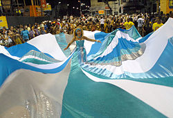
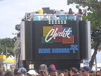

Bahia (Salvador)
O Carnaval de Salvador, também chamado de Carnaval da Bahia, é uma
festa popular realizada anualmente em Salvador, no estado brasileiro da Bahia.
Entrou para a lista dos recordes mundiais, do Guinness, como
o maior Carnaval de rua do mundo.
Algumas fotos dos blocos:
Bloco da Capoeira

ㅤㅤ

Bloco da Nana Banana
Conheça um pouco mais sobre
Voltar